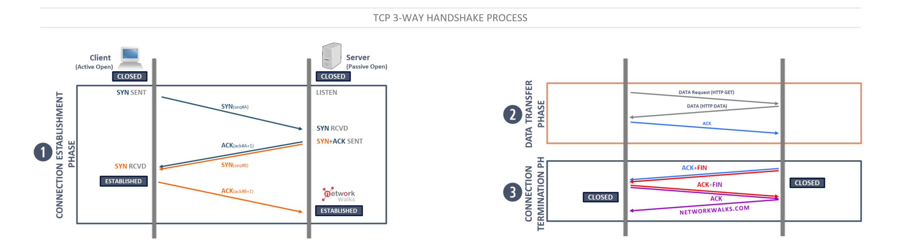

Mikołaj Cichocki 257272, Szymon Machała 257281 All rights reserved 2025
Transmission Control Protocol (TCP) is a connection-oriented Transport layer protocol. TCP lets a device reliably send a packet to another device on the same network or on a different network. TCP ensures that each packet is delivered, if at all possible, by establishing a connection with the receiving device and then sending the packets. If a packet doesn't arrive, TCP resends the packet. The connection is closed only after the packet has been successfully delivered or an unrecoverable error condition has occurred.
TCP protocol can be divided into 3 phases:
Before a client attempts to connect with a server, the server must first bind to and listen at a port to open it up for connections: this is called a passive open. Once the passive open is established, a client may establish a connection by initiating an active open using the three-way (or 3-step) handshake.
Steps 1 and 2 establish and acknowledge the sequence number for one direction (client to server). Steps 2 and 3 establish and acknowledge the sequence number for the other direction (server to client). Following the completion of these steps, both the client and server have received acknowledgments and a full-duplex communication is established.
 SourceThe connection termination phase uses a four-way handshake, with each side of the connection terminating independently. When an endpoint wishes to stop its half of the connection, it transmits a FIN packet, which the other end acknowledges with an ACK. Therefore, a typical tear-down requires a pair of FIN and ACK segments from each TCP endpoint. After the side that sent the first FIN has responded with the final ACK, it waits for a timeout before finally closing the connection, during which time the local port is unavailable for new connections; this state lets the TCP client resend the final acknowledgment to the server in case the ACK is lost in transit. The time duration is implementation-dependent, but some common values are 30 seconds, 1 minute, and 2 minutes. After the timeout, the client enters the CLOSED state and the local port becomes available for new connections.
User Datagram Protocol (UDP) is a connectionless Transport layer protocol used when the overhead of a connection isn't required. After UDP has placed a packet on the network (via the IP protocol), it forgets about it. UDP doesn't guarantee that the packet arrives at its destination. Most applications that use UDP simply wait for any replies expected as a result of packets sent via UDP. If a reply doesn't arrive within a certain period of time, the application either sends the packet again or gives up.
Ports are virtual endpoints for communication. Port numbers help to identify specific processes or services on a host. They enable multiple services to run simultaneously on a single device.
| Types of ports | Range | Used for | Examples |
|---|---|---|---|
| Well-Known | 0 - 1023 | Reserved for common services and protocols (e.g., HTTP, FTP, SMTP). | HTTP(80), HTTPS(443), FTP(21), SSH(22) |
| Registered Ports | 1024 - 49151 | Assigned by IANA for specific services that are not as common. | MySQL(3306), Microsoft SQL Server(1433) |
| Dynamic or Private | 49152 - 65535 | Temporary or private connections, often assigned dynamically by the OS. | Ephemeral ports: Used for client-side connections in TCP/IP networking. |